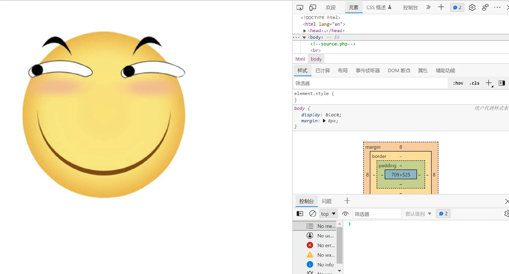
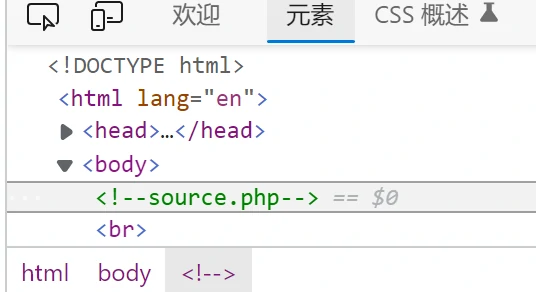
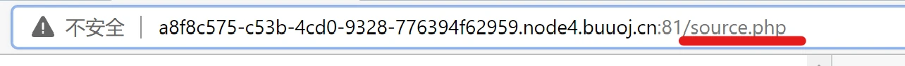
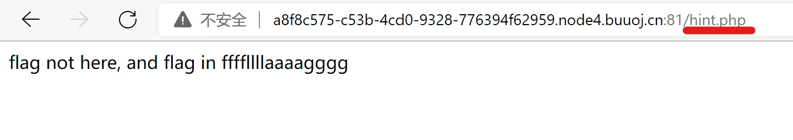
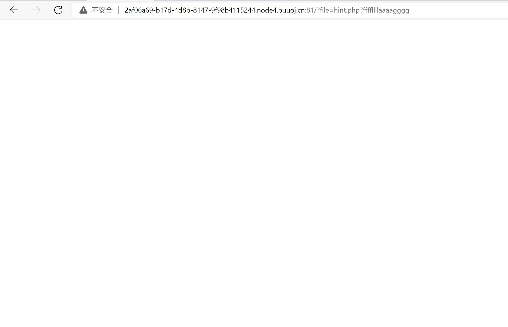
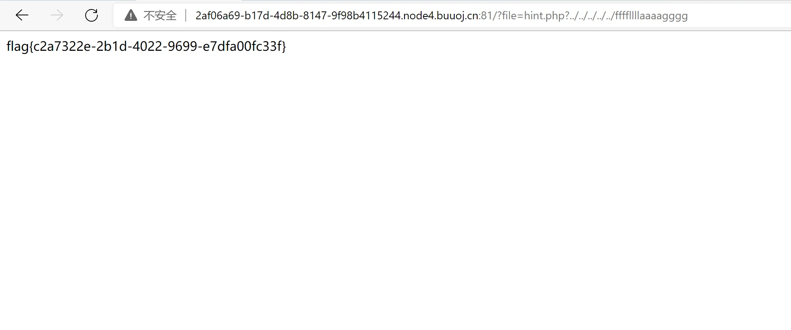

BUUCTF 刷题笔记——day 1
BUUCTF 刷题笔记——day 1
[HCTF 2018]WarmUp
启动靶机
- 只有一张大黄猥琐斜眼笑脸出现，查看图片发现图片储存在 SM.MS 图床上（这不重要）。
查看源码
- 然后，
F12查看源码，界面如下，可以看到右侧代码框内有一行绿色的耀眼文字。应该是线索？


- 在浏览器地址栏后方加上
/source.php就可以访问文件。至于为什么，先挖个坑。

- 回车后我们就会得到以下代码：
1 |
|
显然，接下来就要进行代码审计了，那么，什么是代码审计呢？
顾名思义就是检查源代码中的安全缺陷，检查程序源代码是否存在安全隐患，或者有编码不规范的地方，通过自动化工具或者人工审查的方式，对程序源代码逐条进行检查和分析，发现这些源代码缺陷引发的安全漏洞，并提供代码修订措施和建议。
—— 百度百科
代码审计
- 在一开始，我们不难注意到这里定义了一个白名单数组，我们可以访问一下，万一有线索呢~
1 | $whitelist = ["source"=>"source.php","hint"=>"hint.php"]; |
- 在浏览器地址栏把
source.php改成hint.php即可，然后可以看到一串字符，虽然不是答案，但是我们得到了一个线索，flag 在ffffllllaaaagggg里面。
1 | flag not here, and flag in ffffllllaaaagggg |

- 返回继续看刚才的代码，最下方有一小块代码，先解决他。
1 | if (! empty($_REQUEST['file']) |
$_REQUEST['file']不认识是什么，先称他为 ￥if 语句判断三个条件
- ￥非空（
! empty()） - ￥是字符串（
is_string()） - ￥通过
checkFile()函数且返回true（emmm::checkFile()）
- ￥非空（
如果￥不满足三大条件程序就会输出这个图片（
echo）；而如果程序满足三大条件，程序就会include他。不知道
include干嘛用，但是可以打开这个链接 https://i.loli.net/2018/11/01/5bdb0d93dc794.jpg ，发现这就是网页上显示的大黄猥琐斜眼笑脸，显然，￥现在不满足三大条件，而要让网页发生点别的，就得让￥满足，我们先从checkFile()函数入手。现在我们分析这个函数
第一个代码块
1 | if (! isset($page) || !is_string($page)) { |
依然是 if语句 的判断：如果 $page 满足
- 不存在或值为NULL（! isset()）
- 不是字符串（!is_string()）
其中之一，则输出 "you can't see it" 并返回 false 。大问题，我们不能让他执行。
第二个代码块
1 | if (in_array($page, $whitelist)) { |
依然是 if语句 的判断：如果 $page 存在于 $whitelist 也就是一开始定义得白名单数组中，就返回 true。这个可以让他执行。
第三个代码块
1 | $_page = mb_substr( |
这里给 $_page 赋了个什么值：
mb_substr() 函数负责获取部分字符串；
mb_strpos() 函数负责查找字符串在另一个字符串中首次出现的位置；
在 PHP 中，字符串后的 '.' 为并置运算符，表示连接两个字符串；
因此，mb_strpos 返回的是 $page 字符串中的字符 '?' 之前的所有字符串，又因为字符串末尾置了一个 '?' ，若原字符串中不含 '?' 则会返回原字符串。
第四个代码块
1 | if (in_array($_page, $whitelist)) { |
这里重复了第二个代码块的内容，但是这次判断的是 $_page ，若存在于白名单中则返回 true。也可以让他执行。
第五个
1 | $_page = urldecode($page); |
urldecode() 函数负责解码 URL 编码的字符串，这里将解码后的代码赋给了 $_page 。
第六个代码块
1 | $_page = mb_substr( |
这里重复了第三个代码块的内容，但是这次截取的是 $_page 自己的内容。
最后一部分
1 | if (in_array($_page, $whitelist)) { |
程序再次检查修改后的 $_page 是否在白名单中，若在，则返回 true 。若不在，则输出 "you can't see it" 并且返回 false 。
也就是说，若要
checkFile()函数返回true，则必须控制$page参数不为空且为字符串，然后在三次判断是否在白名单中的任意一次让他存在于白名单中即可。而此时，白名单中只有两个成员：source.php和hint.php。所以
$page是什么呢？1
emmm::checkFile($_REQUEST['file'])
从这段代码可以看出，$page 就是 $_REQUEST['file'] ，而 $_REQUEST 是用于收集HTML表单提交的数据，属于PHP的超级全局变量。总之，他负责接收名为 file 的变量并且进行一次解码。而我们需要做的，就是给 file 赋一个字符串，并且让 checkFile() 函数返回 true 。
- 那么
file的内容需要有什么？
在之前我们尝试访问白名单文件时，得到了一个提示：flag in ffffllllaaaagggg ，而我们的最终目的，就是让这个参数被 include 进去。这里利用的其实就是 文件包含漏洞 ，通过 include 包含并打开 ffffllllaaaagggg 即可。因此给 file 赋的字符串必须为包含文件 ffffllllaaaagggg 的路径名。
接下来我们需要让 checkFile() 返回为 true ，由于必须包含 ffffllllaaaagggg ，因此第一个白名单判断肯定无法使用，而第二个 if语句可以。因为第二次判断之前，程序对字符串进行了截取，我们只需保证 ? 之前为白名单成员即可。
当然，也可以用第三个if语句，不过因为调用了
urldecode(page)对连接进行了二次解码，因此后面需要用%253f（‘?’ 的二次编码）代替白名单元素后面的?。
因此，file 可以取值为：
1 | file=hint.php?ffffllllaaaagggg |
或者是：
1 | file=source.php?ffffllllaaaagggg |
但是，由于我们需要通过 include 打开文件，但是我们需要的文件并不一定在当前目录下，因此，如果打开失败，可在文件名前加 ../ 用来转到上一层目录查找。比如：
1 | file=source.php?../ffffllllaaaagggg |
仍无法找到可自行增加 ../ 继续向上层目录查找即可。
- 那么，怎么把参数传到网页呢？
通过在 url 后以 ? 引导来添加参数，而且不同参数可用 & 分隔。即可以在地址栏输入以下内容则传参成功：
1 | https://靶机地址?file=hint.php?ffffllllaaaagggg |
一般用 payload 来表示后面这段参数：file=hint.php?ffffllllaaaagggg
开始夺旗（Flag）
将刚才得到的 payload 输入到浏览器地址栏之后，记得加 ? 。可以看到浏览器显示空页面，因为文件并不在当前目录下，因此我们需要添加 ../ 来继续查找，可能会需要多个。

在添加五个 ../ 之后，终于得到了我们的 Flag ！

所以，最终的 payload 为：
1 | file=hint.php?../../../../../ffffllllaaaagggg |
或者：
1 | file=source.php?../../../../../ffffllllaaaagggg |
当然还有：
1 | file=source.php%253f../../../../../ffffllllaaaagggg |
自此，夺旗成功。